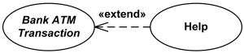

UML Use Case Include
Use case include is a directed relationship between two use cases which is used to show that behavior of the included use case (the addition) is inserted into the behavior of the including (the base) use case.
The include relationship could be used:
- to simplify large use case by splitting it into several use cases,
- to extract common parts of the behaviors of two or more use cases.
A large use case could have some behaviors which might be detached into distinct smaller use cases to be included back into the base use case using the UML include relationship. The purpose of this action is modularization of behaviors, making them more manageable.
Use case B is extracted from larger use case A into a separate use case.
Use cases B and C are extracted from larger use case A into separate use cases.
When two or more use cases have some common behavior, this common part could be extracted into a separate use case to be included back by the use cases with the UML include relationship.
Use case C is extracted from use cases A and B to be reused by both use cases using UML include relationship.
Execution of the included use case is analogous to a subroutine call or macro command in programming. All of the behavior of the included use case is executed at a single location in the including use case before execution of the including use case is resumed.
Note, while UML 2.x defines extension points for the extend relationship, there are no "inclusion points" to specify location or condition of inclusion for the include.
Including use case depends on the addition of the included use case, which is required and not optional. It means that including use case is not complete by itself, and so it would make sense to refer to the including use cases as abstract use cases. Neither of UML 2.x specifications up to the UML 2.5 even mentions abstract use cases. A number of other UML sources define abstract use case as including use case, while in fact it has to be the other way around: including use case is abstract use case. See discussion of the definition of abstract use cases.
Include relationship between use cases is shown by a dashed arrow with an open arrowhead from the including (base) use case to the included (common part) use case. The arrow is labeled with the keyword «include».

Checkout use case includes several use cases - Scan Item,
Calculate Total and Tax, and Payment
Large and complex Checkout use case has several use cases extracted, each smaller use case describing some logical unit of behavior. Note, that including Checkout use case becomes incomplete by itself and requires included use cases to be complete.

Deposit Funds and Withdraw Cash use cases
include Customer Authentication use case.
Use Case Relationships Compared
This site received many requests related to which use case relationship should be used in which situation. I combined several key points from UML 2.4 Specification into the table below. Also, take a look at related discussion in the next paragraph.
| Generalization | Extend | Include |
|---|---|---|
|  |

|
|
| Base use case could be abstract use case (incomplete) or concrete (complete). | Base use case is complete (concrete) by itself, defined independently. | Base use case is incomplete (abstract use case). |
| Specialized use case is required, not optional, if base use case is abstract. | Extending use case is optional, supplementary. | Included use case required, not optional. |
| No explicit location to use specialization. | Has at least one explicit extension location. | No explicit inclusion location but is included at some location. |
| No explicit condition to use specialization. | Could have optional extension condition. | No explicit inclusion condition. |
Missing Use Case Relationship
I was baffled while creating some use case diagrams and answering some questions of this website users, all with a similar problem and no obvious solution using UML 2.4. One quite seemingly simple but insolvable example is to specify relationships between Payment, Payment by Credit, Payment by Cash, etc. use cases when we want to allow customers to pay partially by cash, partially by credit, etc. This is quite common situation for POS terminal checkout in supermarkets. (Another similar example is Plan Trip and Find Flight, Find Hotel, Find Car, etc. where user might want to search not just for one but for several things at a time.)
Though use case generalization seems natural for Payment, Payment by Credit, Payment by Check, etc., but we can't use it because it suggests using only one specific form of payment at a time.
Extend seems appropriate because it has extension points with extension conditions, but we can't use it because the base use case Payment must be complete by itself, which is obviously not the case that we have.
Include seems fine because the base use case Payment is not complete by itself and all different kinds of payments supplement it, but we can't use it because for include relationship included case is not optional but required (and there is no inclusion condition), which means that customer will have to pay using all methods of payment - which is dead wrong.
My hope is that they update the include relationship to allow inclusion conditions and locations the similar way as it was done for extend, or at least provide more use case diagram examples in the future versions of UML specification.